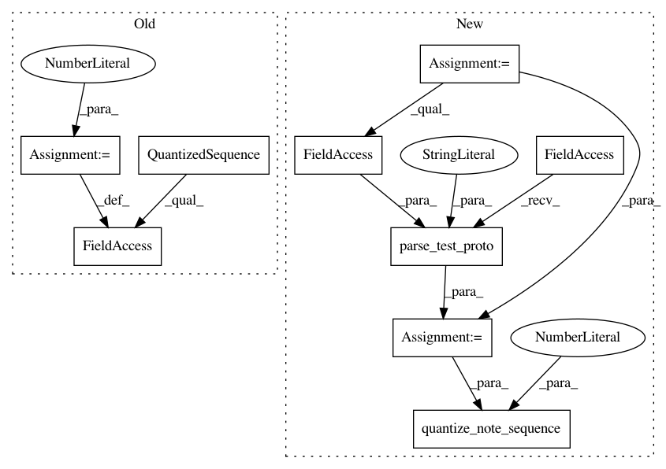

a146d001bf63734851d5a02c2b96d1ef29a61e96,magenta/pipelines/chord_pipelines_test.py,ChordPipelinesTest,testChordsExtractor,#ChordPipelinesTest#,40
Before Change
self.assertEqual(unit.output_type, type(outputs[0]))
def testChordsExtractor(self):
quantized_sequence = sequences_lib.QuantizedSequence()
quantized_sequence.steps_per_quarter = 1
testing_lib.add_quantized_chords_to_sequence(
quantized_sequence, [("C", 2), ("Am", 4), ("F", 5)])
quantized_sequence.total_steps = 8
expected_events = [[NO_CHORD, NO_CHORD, "C", "C", "Am", "F", "F", "F"]]
After Change
self.assertEqual(unit.output_type, type(outputs[0]))
def testChordsExtractor(self):
note_sequence = common_testing_lib.parse_test_proto(
music_pb2.NoteSequence,
time_signatures: {
numerator: 4
denominator: 4}
tempos: {
qpm: 60})
testing_lib.add_chords_to_sequence(
note_sequence, [("C", 2), ("Am", 4), ("F", 5)])
quantized_sequence = sequences_lib.quantize_note_sequence(
note_sequence, steps_per_quarter=1)
quantized_sequence.total_quantized_steps = 8
expected_events = [[NO_CHORD, NO_CHORD, "C", "C", "Am", "F", "F", "F"]]
expected_chord_progressions = []
for events_list in expected_events:
In pattern: SUPERPATTERN
Frequency: 3
Non-data size: 9
Instances
Project Name: tensorflow/magenta
Commit Name: a146d001bf63734851d5a02c2b96d1ef29a61e96
Time: 2016-11-15
Author: curtis@thefjord.org
File Name: magenta/pipelines/chord_pipelines_test.py
Class Name: ChordPipelinesTest
Method Name: testChordsExtractor
Project Name: tensorflow/magenta
Commit Name: a146d001bf63734851d5a02c2b96d1ef29a61e96
Time: 2016-11-15
Author: curtis@thefjord.org
File Name: magenta/pipelines/drum_pipelines_test.py
Class Name: DrumPipelinesTest
Method Name: testDrumsExtractor
Project Name: tensorflow/magenta
Commit Name: a146d001bf63734851d5a02c2b96d1ef29a61e96
Time: 2016-11-15
Author: curtis@thefjord.org
File Name: magenta/pipelines/melody_pipelines_test.py
Class Name: MelodyPipelinesTest
Method Name: testMelodyExtractor